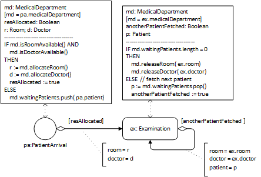
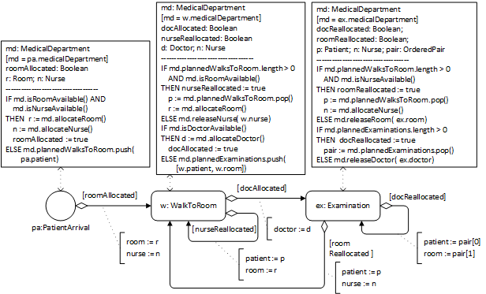

In simulation design models, resource-constrained activities can be modeled in two ways:
either abstracting away from the structure of resource object types and individual resource objects, and only representing a resource object type in the form of a named resource pool with a quantity (or counter) attribute holding the number of available resources, or
explicitly representing resource object types and individual resource objects of that type as members of a collection representing a resource pool.
While the first approach is simpler, the second approach allows modeling various kinds of non-availability of specific resources (e.g., due to failures or due to not being in the shift plan).
For any resource object type Res, the three operations described in the following table are needed.
Resource management operation
General meaning
Resource counter approach
Resource pool approach
isResAvailable
test if a resource of type Res is available and return true or false
test if the corresponding resource counter attribute has a value that is greater than 0
test if the number of available resource objects in the resource pool is greater than 0
allocateRes
allocate a resource object of type Res
decrement resource counter attribute
select (and return) a resource object from the set of available resource objects in the resource pool (using an allocation policy) and designate it as BUSY
releaseRes
de-allocate a resource object of type Res
increment resource counter attribute
take a resource object of type Res as argument and designate it as AVAILABLE
In both approaches, it is natural to add these operations to the object type representing the process owner of the activities concerned, as in the models shown in and .
In the first approach, for each resource object type in the conceptual model, a resource counter attribute is added to the object type representing the process owner and the conceptual model's resource object types are dropped.
In the second approach, the conceptual model's resource object types are elaborated by adding an enumeration attribute status holding a resource status value such as AVAILABLE or BUSY. For each resource object type, a collection-valued property (such as rooms or doctors) representing a resource pool is added to the object type representing the process owner.
A simple model with resource counters
Using the conceptual information model shown in as a starting point, we first rename all classes and properties according to OO naming conventions and replace each of the two (conceptual) operations allocate a room and allocate a doctor with a triple of isAvailable/allocate/release operations for the two resource object classes Room and Doctor in the MedicalDepartment class, where we also add the counter attributes nmrOfRooms and nmrOfDoctors. Then, the two resource object classes Room and Doctor are dropped. The result of this elaboration is the information design model shown in .
An information model for the simplified design with the resource counters nmrOfRooms and nmrOfDoctors.
Using the conceptual process model shown in as a starting point and based on the type definitions of the information design model of , we get the following process design.
A process design model based on the information design model of .
This process model defines the following two event rules.
IF md.waitingPatients.length = 0 THEN md.releaseRoom(); md.releaseDoctor(); anotherPatientFetched := false ELSE p := md.waitingPatients.pop(); anotherPatientFetched := true
IF anotherPatientFetched SCHEDULE Examination( patient:=p, medicalDepartment:=md)
Notice that the event scheduling arrows of , and also the SCHEDULE statements of the corresponding event rule tables, do not contain assignments of the duration of activities, since it is assumed that, by default, whenever an activity type has an operation duration(), the duration of activities of this type are assigned by invoking this operation.
A general model with resource objects as members of resource pools
In a more general approach, instead of using resource counter attributes, explicitly modeling resource object classes (like Room and Doctor) allows representing resource roles (stereotyped with «res») and resource pools (stereotyped with «pool») in the form of collections (like md.rooms and md.doctors) and modeling various forms of non-availability of resources (such as machines being defective or humans not being in the shift plan) with the help of corresponding resource status values (such as OUT_OF_ORDER). The result of this elaboration is the information design model shown in .
An OEM-A class model with resource object types for modeling resource roles and pools.
For an OEM-A class model, like the one shown in , the following completeness constraint must hold: when an object type O (like Doctor) participates in a «res» association (a resource role association) with an activity type A (like Examination), the process owner object type of A (MedicalDepartment) must have a «pool» association with O.
A process design model based on the information design model of .

Extending OE Class Diagrams by adding a «resource type» category
The information design model of contains two object types, Room and Doctor, which are the range of resource role and resource pool properties (association ends stereotyped «res» and «pool»). Such object types can be categorized as «resource type» with the implied meaning that they inherit a resource status attribute from a pre-defined class Resource, as shown in .
Any resource type R extends the pre-defined object type Resource
The introduction of resource types to OEM class models allows simplifying models by dropping the following modeling items from OEM-A class models, making them part of the implicit semantics:
the status attributes of object types representing resource types, which are implicitly inherited;
the pre-defined enumeration ResourceStatusEL;
the resource management operations isAvailable, allocate and release, which are implicitly inherited by any resource type; and
the planned activity queues may possibly be implicitly represented for any resource-constrained activity type in the form of ordered multi-valued reference properties of its process owner object type.
This is shown in .A simplified version of the model of
Revisiting the manufacturing workstation example
A manufacturing workstation, or a "server" in the terminology of Operation Research, represents a resource for the processing activities performed at/by it. This was left implicit in the OEM-A class model shown on the right-hand side of . Using the new modeling elements (resource types, resource roles and resource pools), the processing activities of a workstation can be explicitly modeled as resource-constrained activities, leading to the OEM-A class model shown in and to a more high-level and more readable process model compared to the process model of .
An OE Class Diagram modeling a single workstation system with resource-constrained processing activities
Decoupling the allocation of multiple resources
In a simplified simulation design for the extended scenario (with patients and nurses first walking to examination rooms before doctors are allocated for starting the examinations) described by the conceptual models of and , we do not consider the walks of doctors, but only the walks of nurses and patients. For simplicity, we drop the superclass people and associate the activity type WalkToRoom with the Patient and Nurse classes. The result of this elaboration is the information design model shown in .
An information design model for decoupling the allocation of rooms and doctors.
A process design model based on the information design model of .

This process design model defines three event rules. Notice that the Examination event rule either re-allocates the doctor to the next planned examination and schedules it, if there is one, or it releases the doctor and re-allocates the room to the next planned walk-to-room and schedules it, if there is one.
Centralizing the re-allocation of resources
As shown before, in the conceptual process models of and , the re-allocation of resources can be centralized with the help of resource release request events and the process owner and the involved performers can be displayed by using a Pool that is partitioned into Lanes for the involved activity performers, resulting in the model shown in .
Representing the process owner as a Pool and activity performers as Lanes in a process design model.